地政学
サマルカンドはイラン世界、テュルク世界、ロシア帝国、ソ連、独立後の国家建設が交わる結節点です。タジキスタンへ近い州都として、言語、国境、観光外交、地域開発も街の読み筋になります。古都の威信は政治資源です。

🇺🇿 ウズベキスタン / 中央アジア / World City Atlas
ザラフシャン川流域のオアシスに、ソグド、ティムール朝、イスラム学芸、ソ連都市計画、観光復興が重なる古都。世界遺産の景観だけでなく、水、労働、工芸、日常生活を読む都市です。
都市の骨格
サマルカンドは乾いた中央アジアの中で、水路、庭園、隊商路、宗教施設、ソ連期の新市街が重なってできた都市です。古い城壁都市だけでなく、駅、大学、バザール、郊外農地までが都市の読み筋になります。
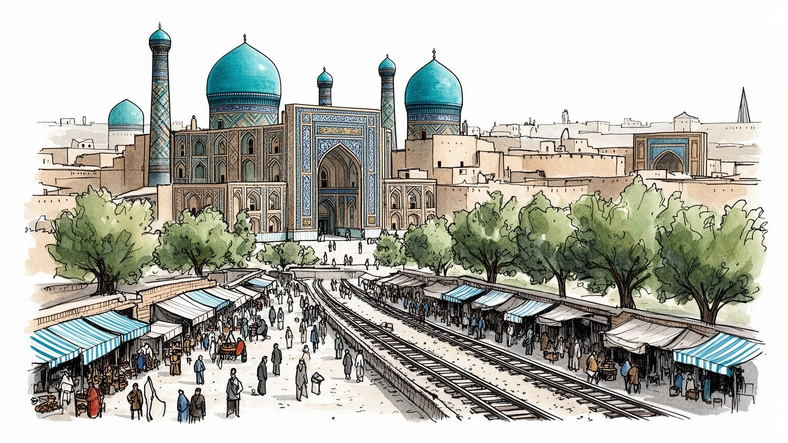
サマルカンドはイラン世界、テュルク世界、ロシア帝国、ソ連、独立後の国家建設が交わる結節点です。タジキスタンへ近い州都として、言語、国境、観光外交、地域開発も街の読み筋になります。古都の威信は政治資源です。
観光だけでなく、果樹、野菜、ブドウ、食品加工、絹織物、陶器、建設、大学、交通が都市を支えます。ホテルや修復現場の仕事、家族経営の店、市場の運搬、郊外農業が近く、季節労働と若い就業も重要な条件です。
イスラム建築の壮麗さの背後に、ペルシア語文化、ウズベク語の国家制度、タジク系住民の生活、スーフィー聖者信仰、学問の記憶があります。霊廟とマドラサは観光地である前に、祈り、墓参、教育の場所でもあります。
住民の日常は旧市街の路地、ソ連期の集合住宅、新しい道路、大学、バザール、郊外の畑に広がります。観光客の増加は収入を生む一方、家賃、保存規制、水不足、交通混雑を強め、暮らしとの調整が問われる焦点です。
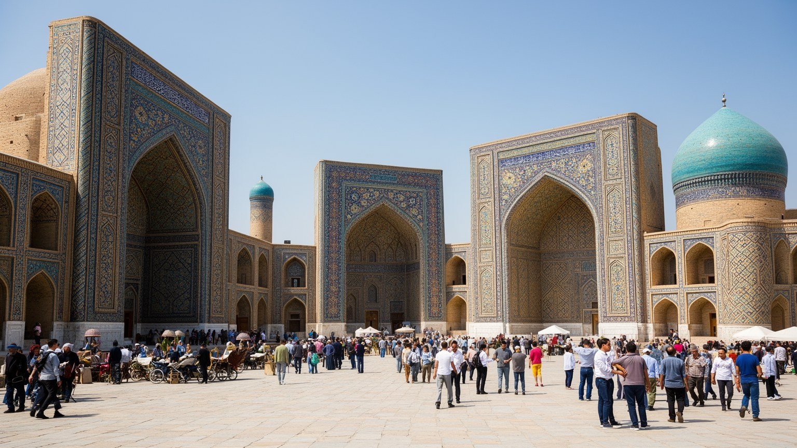
サマルカンドを象徴するレギスタン広場は、単なる名所ではなく、都市が権威をどのように見せ、学問をどのように制度化し、現在の観光経済へどう接続しているかを示す場所です。三つのマドラサに囲まれた広場は、かつての市場、布告、教育、儀礼の舞台であり、今は夜間照明、入場管理、記念撮影、土産物販売の場でもあります。青いタイルや幾何学文様は視覚的に強い印象を残しますが、その背後には職人、修復技師、警備員、案内人、清掃、チケット販売、周辺の飲食店が働いています。広場が整えられるほど都市の記憶は分かりやすくなりますが、日常の雑多さは外へ押し出されやすくなります。レギスタンを見ることは、ティムール朝の威信だけでなく、世界遺産都市が観光客に見せる顔と住民が使う街の距離を読むことです。朝の広場では通勤者や学生も近くを通り、夕方には家族連れ、国内旅行者、写真を撮る若者が増えます。観光の舞台としての秩序と、州都の日常が重なるため、警備、清掃、歩行者動線、露店の位置は都市運営そのものになります。広場の使われ方を追うと、記念碑と生活の境界が毎日調整されていることが分かります。周辺の店舗や宿泊施設が変わると、住民の働き方や夜の人通りも変わります。学校行事、祝祭、ニュース映像、SNSの写真もこの広場を都市の顔にします。中心広場は歴史の額縁であると同時に、都市経済と市民感情の温度計でもあります。
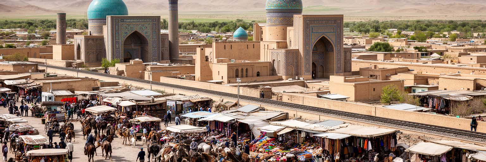
サマルカンドの重要性は、地図の中央にあるからではなく、乾燥地を越える移動が水、宿、税、保護、情報を必要とした場所に成立したからです。中国、イラン、インド、ステップ世界、イスラム圏を結ぶ交易は、絹や香料だけでなく、宗教、天文学、数学、紙、装飾技法、料理、言語を運びました。ソグド商人の記憶は、都市を単一民族の物語に閉じ込めない手がかりです。現在の国境線で見るとサマルカンドはウズベキスタンの州都ですが、歴史的にはペルシア語文化、テュルク語文化、アラブ・イスラムの知、ロシア語の行政空間が重なってきました。隊商路は美しい過去として語られがちですが、移動には危険、税、疫病、奴隷化、軍事力も伴いました。シルクロード都市を読むには、交流の華やかさと支配の緊張を同時に見る必要があります。その複雑さが、サマルカンドを観光ポスター以上の都市にしています。今日の道路や鉄道も、かつての隊商路と同じように、都市の価値を周辺地域との接続で決めます。市場へ届く農産物、大学へ通う学生、出稼ぎから戻る家族、国際会議の参加者は、別々の目的で同じ交通網を使います。過去の交易を現在の移動へ重ねると、古都は静かな遺跡ではなく動き続ける結節点として見えてきます。さらに、国境に近い中央アジアの都市として、近隣国との言語、親族、商売のつながりも残ります。サマルカンドの世界性は遠い過去だけでなく、今の広域生活圏にもあります。
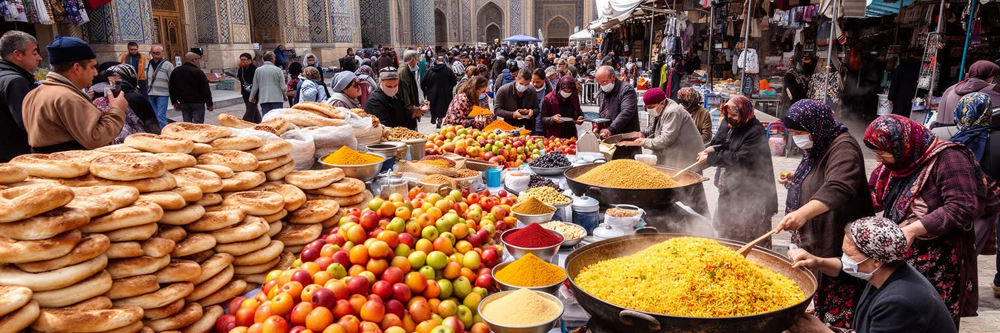
サマルカンドの食を読む入口は、レストランよりもバザールです。ナン、プロフ、串焼き、干し果物、ナッツ、乳製品、香辛料、ブドウ、メロン、ザクロは、観光客の楽しみであると同時に、周辺農地と家庭の台所を結ぶ日常の流通でもあります。ザラフシャン川流域の灌漑農業は、都市の食卓、加工業、雇用を支え、季節ごとの価格や水の状況が市場に現れます。バザールではウズベク語、タジク語、ロシア語、観光客向けの英語が混ざり、値段交渉、試食、運搬、両替、タクシーの呼び込みが同じ空間で起こります。観光化が進むと、商品は写真映えし、土産物として整えられますが、住民の買い物場所としての機能を失うと生活基盤は弱まります。市場は古い風景の保存物ではなく、農家、卸、料理人、家族、旅行者が毎日交渉する経済の現場です。朝早くに運ばれる野菜やパン、昼の食堂、夜の家族の買い物は、観光の時間割とは違うリズムで動きます。価格が上がれば住民の食卓に響き、観光需要が増えれば若い働き手の雇用も生まれます。買い物かごを持つ高齢者、学校帰りの子ども、試合を話題にする若者が同じ通路を使います。衛生管理、冷蔵設備、電子決済、観光客向け価格の線引きも、現代の市場では重要になります。食を通じて見ると、サマルカンドは古い風情ではなく、生産と消費が密接に結びつく都市です。
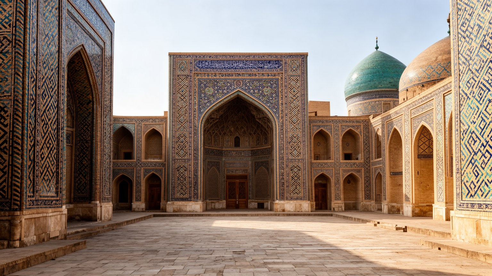
サマルカンドの宗教的景観は、壮麗なモスクやマドラサだけで完結しません。グーリ・アミール廟、シャーヒ・ズィンダ、ビービー・ハーヌム、ウルグ・ベクの学問的記憶は、王朝の威信、墓参、教育、天文学、聖者信仰を結びます。イスラム化以前のソグド的な多宗教性を経て、都市はイスラム学芸の場となり、数学、暦、星の観測、法学、詩、建築装飾が結びつきました。ウルグ・ベク天文台の記憶は、信仰と科学を単純に対立させない都市史を示します。霊廟を訪れる人は観光客だけではありません。家族で祈る人、墓を参る人、宗教的な系譜を大切にする人がいて、神聖な場所は写真を撮る空間である前に礼節を求める場所です。保存と観光の整備が進むほど、祈りの静けさ、地域の慣習、商業化の境界が問われます。サマルカンドの宗教を読むには、建築の色彩とともに、そこに集まる人の時間を読む必要があります。都市にはタジク語系の生活文化、ウズベク語の公的空間、ロシア語の教育記憶も重なり、宗教施設は言語と家族史の交差点にもなります。祈り、学び、観光が近い距離にあるため、訪れる側の礼節と、暮らす側の静けさをどう両立するかが重要です。宗教的な場所の周囲には、花売り、茶屋、案内人、交通の仕事も生まれます。信仰の空間は精神的な中心であると同時に、地域経済と人のつながりを支える公共空間でもあります。
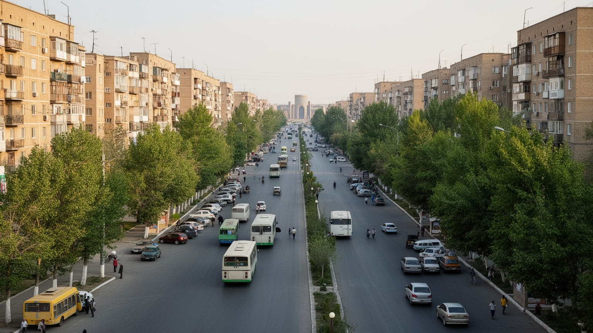
サマルカンドは中世の青いドームだけで成り立つ都市ではありません。ロシア帝国の進出後、鉄道、行政施設、軍事的な街区、新しい大通りが作られ、ソ連期には学校、大学、工場、集合住宅、劇場、公園が都市の別の中心を形成しました。旧市街の路地と新市街の直線的な道路や公共施設は、都市の中で異なる時間を示します。ソ連都市計画は民族や宗教を抑え込む面を持ちながら、教育、医療、女性の就業、工業化、ロシア語公共空間も広げました。独立後のサマルカンドでは、この基盤が完全に消えたわけではなく、新しい国家記念、観光道路、ホテル、商業施設と重なっています。住民の多くにとって、日常の便利さは歴史地区よりも学校、病院、バス停、集合住宅、職場の距離にあります。古都としての顔だけを強調すると、二十世紀の労働、教育、移住、集合住宅の記憶を見落とします。集合住宅の中庭、並木道、公共交通、大学の寮、工場跡は、観光客が短時間で通り過ぎやすい場所ですが、住民の生活史を支える舞台です。子どもの遊び場、サッカーやレスリングの練習、結婚式場、カフェ、映画や音楽の夜は、新市街側の文化でもあります。地元テレビやSNSは、交通、試合、大学、祭り、求人の情報を流します。建物の老朽化や設備更新、若い世帯の住まい、公共空間の維持は、新市街側の大きな焦点です。近代の部分を軽く扱わないことが、現在の都市として見る条件になります。
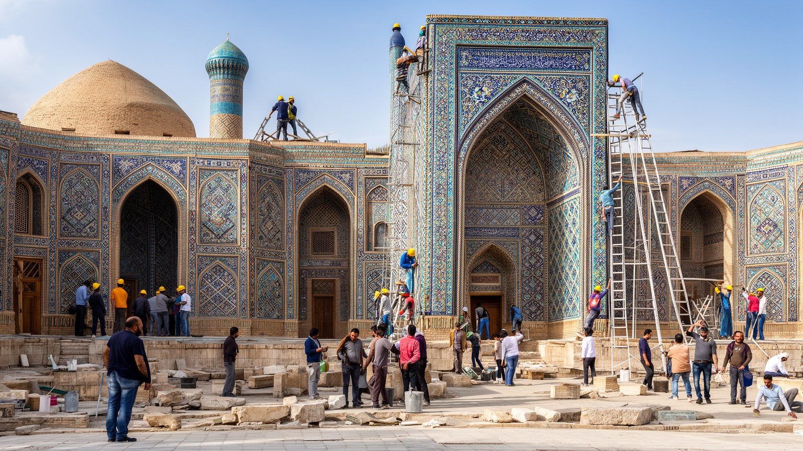
世界遺産都市としてのサマルカンドは、保存と復興の難しさを常に抱えています。タイルを補い、壁を直し、広場を整える作業は、崩壊を防ぎ観光を支える一方、どの時代の姿を標準にするのか、どこまで新しく作り直してよいのかという問題を生みます。修復された建築は美しく見えますが、古い素材、手仕事、考古学的な層、住民の使い方が単純に置き換えられると、歴史の厚みは薄くなります。観光収入はホテル、ガイド、飲食、交通、工芸を支えますが、中心部の地価上昇や移転、生活道路の観光化、写真撮影の混雑も生みます。保存は専門家だけの作業ではありません。住民が日常的に使う路地、市場、礼拝所、墓地、学校をどう守るかが重要です。サマルカンドの美しさは、完璧に整えた舞台だけでなく、修復途中の壁、使われ続ける中庭、観光客の背後で続く生活にもあります。保存の成功は、建築を残すだけでなく、そこに暮らす人の居場所を残せるかで決まります。修復は雇用を生み、若い職人に技能を継ぐ機会を与えますが、短期の見栄えを優先すれば技術は浅くなります。観光の速度と保存の時間は違うため、行政、研究者、住民、事業者が同じ場所を別々の尺度で見ていることを意識する必要があります。保存区域の外側でも、交通、広告、電線、排水、住宅改修が景観に影響します。見える建築だけでなく、周辺の生活インフラを整えることが、長く続く保存につながります。
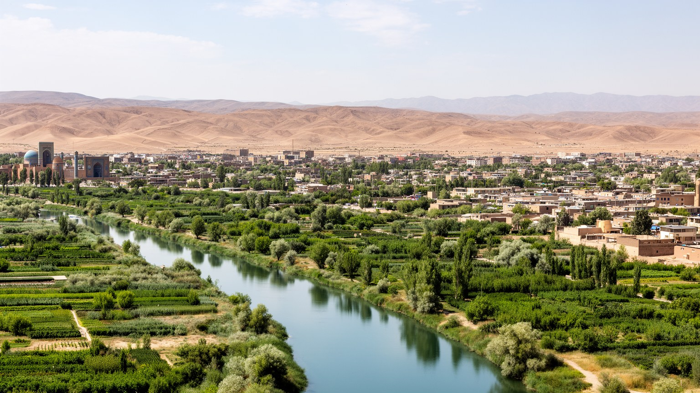
サマルカンドの都市生活は、水の配置を抜きに理解できません。ザラフシャン川流域のオアシスは、砂漠的な乾燥地の中で農地、庭園、街路樹、家庭、工芸、観光施設を支えてきました。水路があるから果樹や野菜が育ち、市場が成り立ち、都市は旅人を迎えられました。しかし水は無限ではありません。農業、人口増加、ホテル、緑地、気候変動、上流と下流の利用が重なるほど、配分の政治が見えやすくなります。青いタイルの都市という印象の背後には、灌漑の維持、漏水、下水、飲料水、夏の暑さ、郊外開発の問題があります。水不足は単なる環境問題ではなく、農家の収入、食品価格、都市の衛生、観光の快適さ、住宅地の緑に直結します。オアシス都市を見るとは、建物の美しさだけでなく、どこから水が来て、誰が管理し、どこで不足するのかを読むことです。サマルカンドの持続性は、過去の水路を記念することではなく、現在の水を公平に使える仕組みにかかっています。夏の強い日差しの下では、街路樹、日陰、中庭、噴水、冷たい飲み物が生活の質を左右します。観光地を緑で飾る水と、家庭や農地に必要な水が競合すると、都市の優先順位が問われます。水をめぐる判断は、古都の景観を守る判断でもあります。節水技術や漏水対策は目立ちませんが、都市の未来には欠かせません。水の管理を日常の行政として見れば、オアシスは自然の恵みだけでなく、人が維持する制度だと分かります。
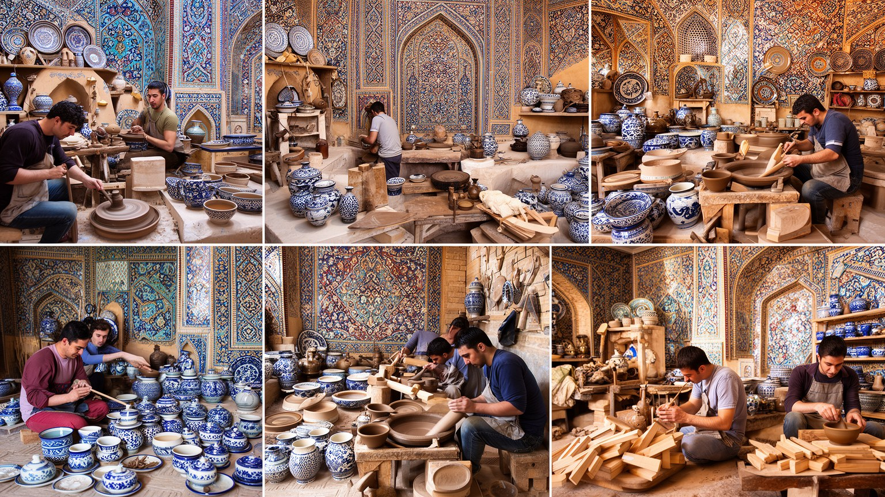
サマルカンドの工芸は、土産物店に並ぶ模様だけではありません。絹織物、刺繍、陶器、銅細工、木工、紙作り、青いタイルの補修は、家族の仕事、徒弟関係、学校、観光需要、輸出市場の間で受け継がれています。模様は美しい装飾であると同時に、地域の記憶、宗教的な感覚、植物や星へのまなざし、商業的な工夫を含みます。観光客が増えると、職人には販売機会が生まれますが、早く安く大量に作る圧力も強まります。手仕事が実演として消費されるだけになると、素材選び、染色、焼成、修理、道具の管理、若い担い手の生活が見えにくくなります。工芸を守るには、作品を買うだけでなく、職人が住み、学び、材料を得て、時間をかけて作れる条件が必要です。サマルカンドの都市文化は宮殿的な建築だけでなく、家庭の布、食器、扉、墓標、修復現場の細部にも宿ります。工房は販売の場所であると同時に、子どもが手順を見て覚え、祖父母が文様の意味を語り、若者がオンライン販売を試す学びの場でもあります。若い世代が工芸を仕事として選ぶには、収入、販路、教育、作業場の家賃が現実的でなければなりません。模様を守ることは、職人の暮らしを守ることと切り離せません。観光客の目に届く商品と、家庭で使われる道具の両方を見ると、工芸の社会的な役割が見えてきます。真正性は古い形を固定することではなく、技能が今の暮らしの中で使われ続けることです。
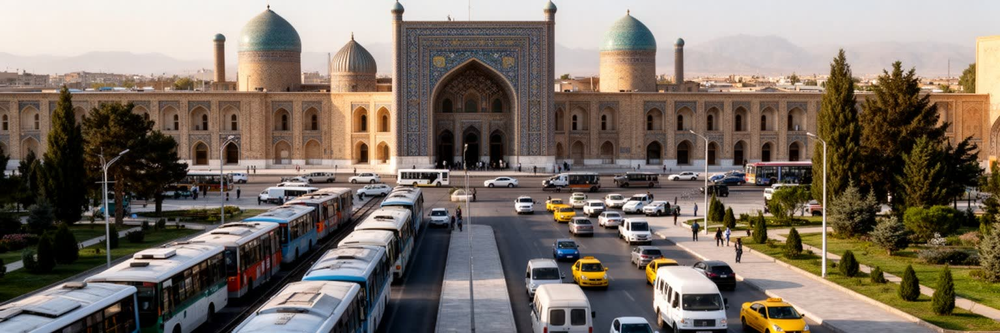
サマルカンドは歴史的な隊商路の都市であると同時に、現代の鉄道、道路、空港に支えられる州都です。タシュケント、ブハラ、カルシ、国境地域を結ぶ移動は、観光客だけでなく学生、公務員、商人、農産物、建材、労働者を運びます。高速鉄道や幹線道路は都市の外から人を呼び込み、ホテルや飲食店を伸ばしますが、中心部の交通混雑、駐車、歩行者空間、郊外開発の負担も強めます。旧市街を歩く観光客の動線と、住民が通勤や通学で使うバス、乗合タクシー、私有車の動線は必ずしも一致しません。空港や駅の整備は国際都市としての見え方を変えますが、日常の移動が不便なら住民の生活は改善しません。交通を読むことは、サマルカンドが過去の交易都市であるだけでなく、現在の地域経済を束ねる実務的な都市であることを確認する作業です。都市の入口が華やかになるほど、学校、病院、市場、スポーツ施設へ向かう普通の移動も同じ重さで考える必要があります。新しい観光施設が郊外へ広がると、土地利用、農地の転換、通勤距離も変わります。子どもの通学、高齢者の通院、夜の帰宅、週末の試合観戦は、公共交通の本数や歩道の安全に左右されます。駅前の開発、空港からのアクセス、旧市街の歩行者化は、観光収入と住民の時間を同時に左右します。誰が速く移動でき、誰が待たされるのかを見ると、都市の公平性も見えてきます。交通政策は保存政策と生活政策の両方です。
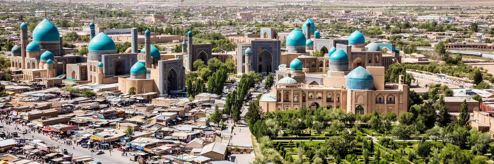
サマルカンドを読むとき、青いドームとレギスタンだけを中心に置くと、都市の本当の厚みを取り逃がします。この街は、ソグド商人、ティムール朝の政治、イスラム学芸、ペルシア語文化、ウズベク国家、タジク系住民の生活、ロシア帝国とソ連の都市計画、独立後の観光開発が折り重なった場所です。世界遺産としての価値は明らかですが、その価値を支えるのは修復現場、市場、学校、交通、郊外農地、水路、家族経営の店、祈りの時間でもあります。観光都市として成功するほど、都市は美しく整えられますが、整えられた景観の外にある生活を見なければ、サマルカンドは過去の舞台装置になってしまいます。重要なのは、歴史を誇ることと現在の住民が暮らし続けることを対立させない視点です。水を分け、職人を育て、住宅を守り、言語と宗教の多層性を尊重し、観光の収益を生活基盤へ戻せるか。そこに、古都サマルカンドが現在の都市として持つ焦点と魅力があります。訪れる人にとっては数日の滞在でも、住民にとっては物価、仕事、学校、交通、礼拝、家族の世話、スポーツ、音楽、買い物が続く場所です。都市を一枚の美しい写真としてではなく、毎日の判断が積み重なる生活圏として読むと、サマルカンドの世界性は過去の栄光ではなく、現在の調整能力として見えてきます。だからこそ、レギスタンを見た後に市場、住宅地、駅、水路、修復現場へ目を移すことが大切です。華やかな中心と静かな周縁をつなげて初めて、生きた都市の輪郭が立ち上がります。